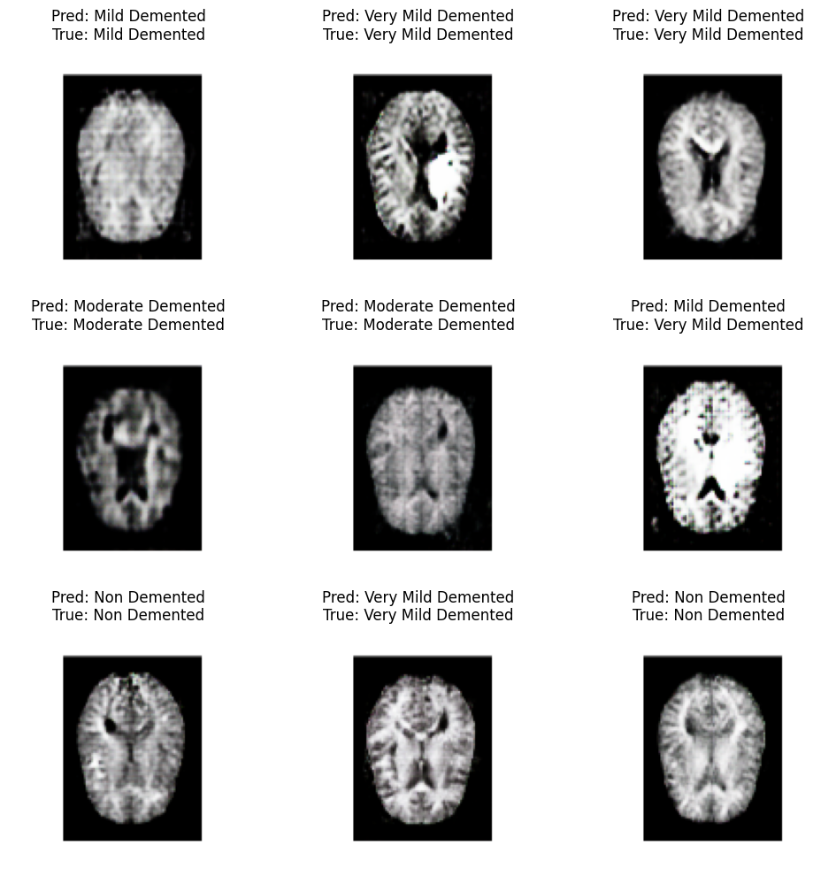

Deep Learning–Based Dementia Detection
Convolutional Neural Network and Grad-CAM based approach to classify dementia stages and highlight key brain regions.
Convolutional Neural Network and Grad-CAM based approach to classify dementia stages and highlight key brain regions.
This project applies CNNs and Grad-CAM to detect and classify dementia from MRI scans into four stages: Non-Demented, Very Mild, Mild, and Moderate Dementia. By combining classification with region-specific visualization, the system enhances model interpretability for clinicians.
Diagnosing dementia is complex, and conventional ML models lack interpretability. This project integrates Grad-CAM visualizations with CNN models to pinpoint which brain regions influence predictions, building trust in automated systems for medical diagnosis.
We used the Kaggle-based MRI dataset, containing 6,400 MRI scans categorized across four dementia severity classes. Data was augmented using DCGAN to balance class representation (400 images per class).
Model Predictions
Grad-CAM Activations
This system provides interpretable deep learning diagnostics for dementia, aiding early intervention in clinical settings — especially in low-resource environments where radiologist availability is limited.